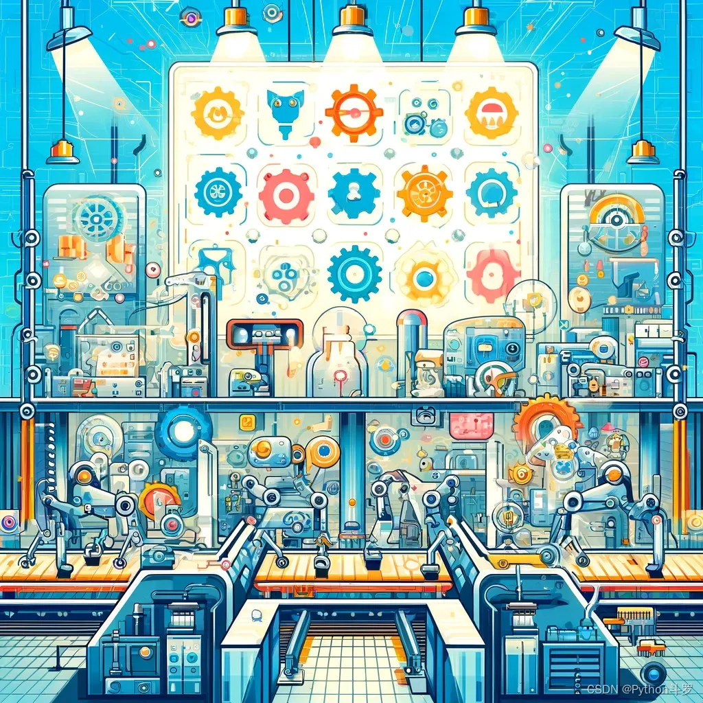

工厂方法模式：解锁灵活的对象创建策略
在软件设计中，工厂方法模式是一种非常实用的创建型设计模式，它不仅提升了系统的灵活性，还简化了对象的创建过程。本文将详细探讨工厂方法模式的核心概念、实现方式、应用场景以及与其他设计模式的对比，旨在提供一份全面且实用的指南。

1. 工厂方法模式的定义
工厂方法模式（Factory Method Pattern）属于创建型模式，它提供了一种创建对象的最佳方式。在工厂方法模式中，创建对象的任务被交给了一个单独的工厂类，这个类的实例方法决定新创建的对象的类型。这种模式的核心精神是定义一个创建对象的接口，但让实现这个接口的类来决定实例化哪个类。工厂方法使一个类的实例化延迟到其子类。
2. 实现工厂方法模式
在Python中实现工厂方法模式相对直接。下面是一个简单的例子，通过这个例子，我们可以看到工厂方法如何在实践中被使用：
class Pet:
def speak(self):
pass
class Dog(Pet):
def speak(self):
return "Woof"
class Cat(Pet):
def speak(self):
return "Meow"
class PetFactory:
def get_pet(self, pet_type):
pets = {"dog": Dog(), "cat": Cat()}
return pets.get(pet_type, Pet())
# 使用工厂类创建对象
factory = PetFactory()
dog = factory.get_pet("dog")
print(dog.speak()) # 输出: Woof
cat = factory.get_pet("cat")
print(cat.speak()) # 输出: Meow
在这个例子中，PetFactory 类决定了哪一个宠物类被实例化，从而封装了对象创建的逻辑。
3. 工厂方法模式的应用实例
工厂方法模式广泛应用于需要大量创建复杂对象的软件系统中，特别是当对象的创建需要依赖于其所处的环境或配置时。一些典型的应用场景包括：
- 应用程序主题和皮肤的选择：不同的皮肤或主题可能需要不同类型的对象。
- 跨平台应用开发：根据不同的操作系统创建适合的界面元素。
- 管理数据库连接：根据不同的数据库服务器（如MySQL, PostgreSQL）创建对应的连接对象。
4. 优点和缺点
优点：
- 增加了系统的灵活性：可以在不修改现有代码的情况下引入新的类型。
- 封装了创建逻辑：客户代码可以避免直接创建对象，降低了耦合。
缺点：
- 代码可能变得更复杂：如果类的数量增加，维护相应的工厂类也可能变得复杂。
5. 工厂方法模式与简单工厂模式的对比
简单工厂模式与工厂方法模式经常被混淆，但它们有明显的不同。简单工厂通过一个方法创建所有类型的对象，而工厂方法模式则是通过多个方法或类来创建对象，每个方法或类负责创建一个具体类型的对象。工厂方法模式提供了更好的灵活性和扩展性。
6. 总结
工厂方法模式是一种有效的设计工具，特别适合那些对象创建逻辑较为复杂，或对象类型需要依赖于初始化条件的情况。